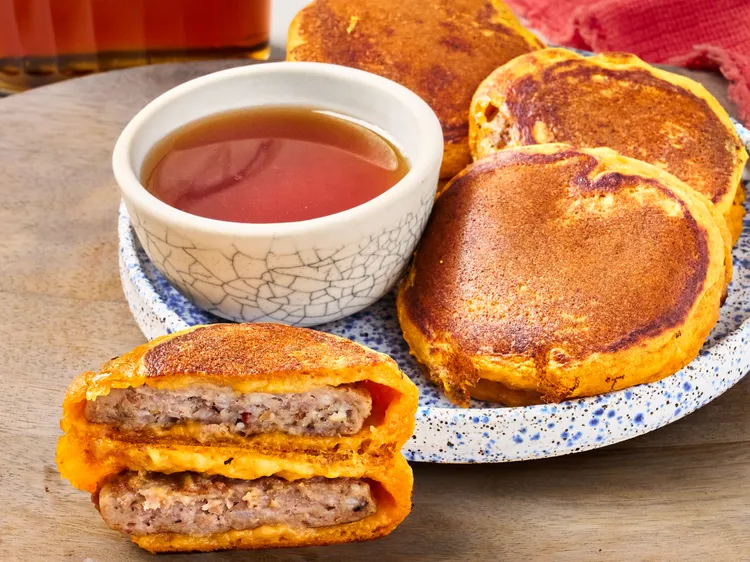

Home
Easy Pumpkin Sausage Pancakes

Ingredients
- 2 cups pancake mix
- 1 (15 ounce) can pumpkin puree
- 1 1/2 cups milk
-
2 (8 count) packages fully cooked sausage patties, such as Jimmy Dean®
- 1 cup syrup, or as needed for serving
Steps:
- Add pancake mix, pumpkin, and milk to a bowl and stir until well combined.
- Heat a nonstick skillet over medium heat. Working in batches, dip each sausage patty into pancake batter, and cook in the skillet until golden, 3 to 4 minutes per side.
- Serve immediately with syrup or refrigerate until ready to serve.